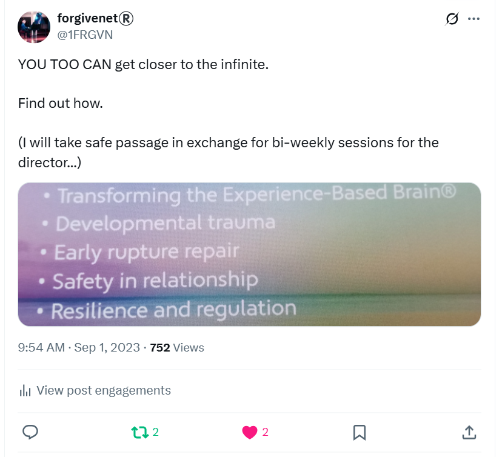
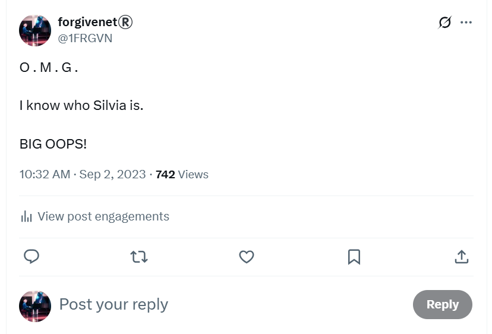
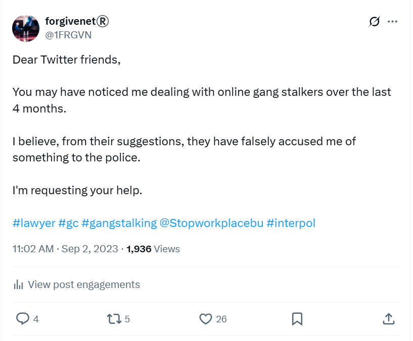
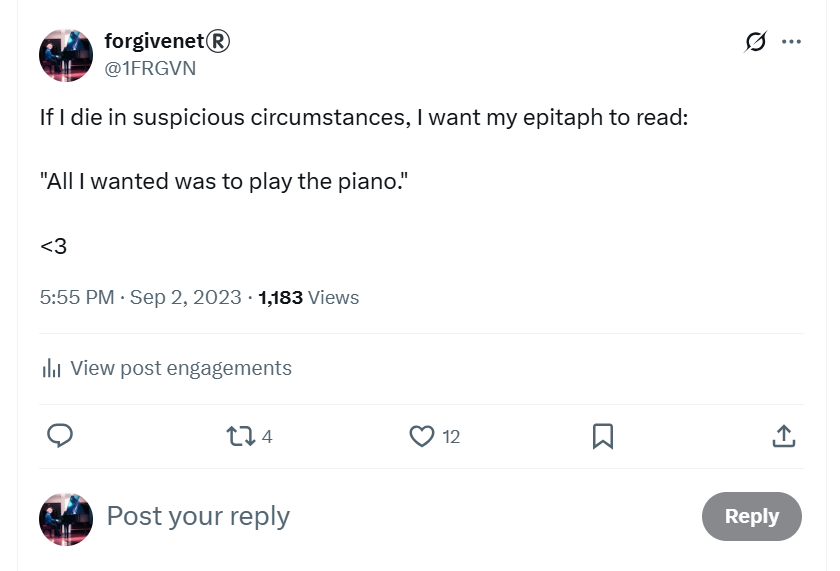
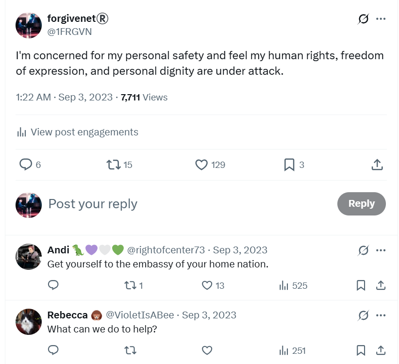
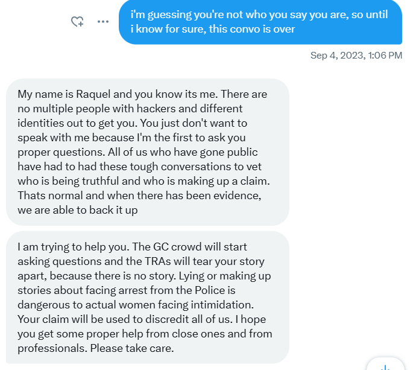
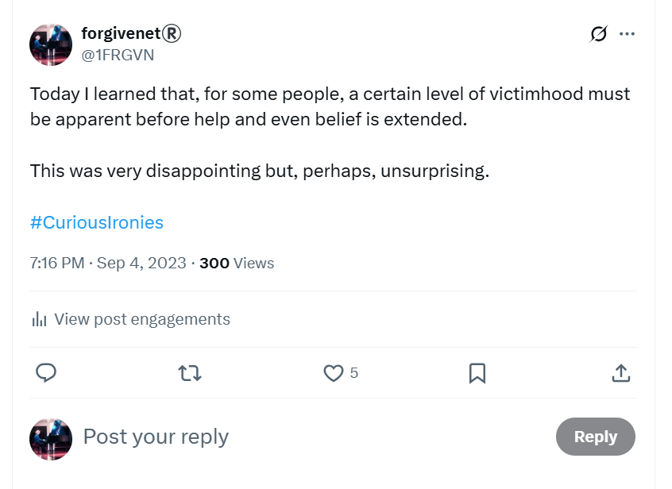
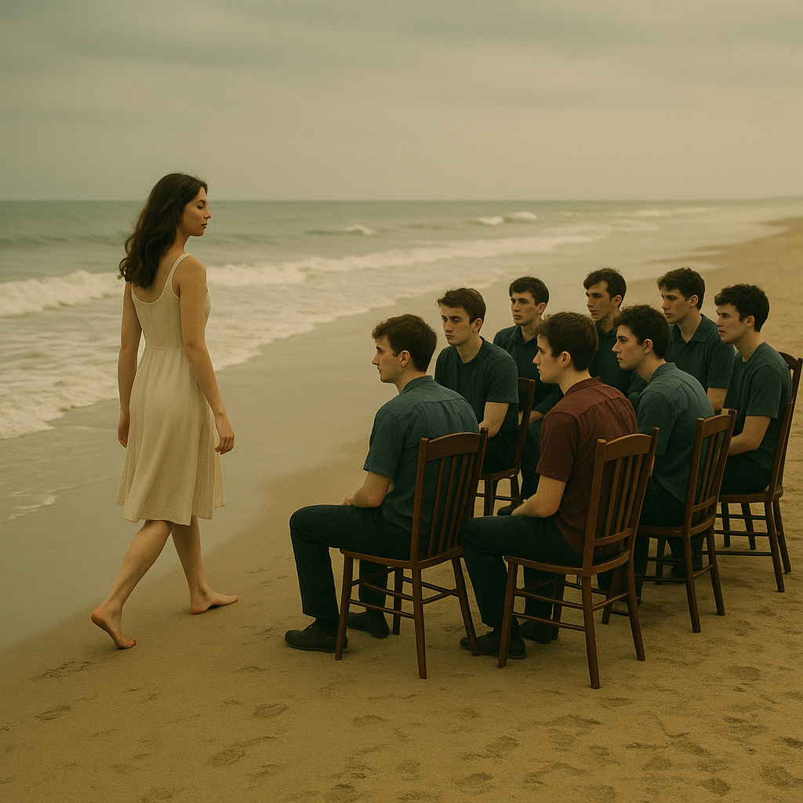

September 2023¶
Praying at Cauterets¶
- On Friday 1st September, I’m thoroughly convinced something bad is going to happen to me when I return to my home in Dénia.
- I offer Domingo trauma healing sessions on X in return for safe passage in Dénia.

- I also go to the church at Cauterets to pray with Sandra Rita Diaz.

- We discover that Sainte Bernadette came to Cauterets to take the cure three times, and she visited the church often to pray.
- There is a little altar set up for her.

- I get goose bumps.
- Before I head off to Spain, I go to the grotto at Lourdes to ask for Our Lady’s protection from evil men.
- She supplies.
Going public on Twitter¶
- I’m on my way home.
- I will stop for one night in Zaragoza because it’s a long drive.
- I don’t know what to do. I’m extraordinarily stressed and anxious.
- I feel like parasites are running all over me and I can’t get them off.
Parasite baths
- I still feel like this in May 2025.
- I’ve kinda got used to it because I’ve had to accept that this is no ordinary situation.
- God’s got my back though.
- I hear that crows use this sort of thing for positive outcomes.
- So will I.

- I believe the intensifying harassment and terror is because Domingo and his associates do not want me to return to Dénia.
- I feel that something awful is going to happen to me on Monday 4th September at home in Spain, possibly that I will be arrested but I don’t know what for.
- It is exactly the same way I felt when I thought was going to be arrested and go to prison for 7 years in Thailand.
- It is also the same feeling of dread I experienced on the weeks of run-up to chamber music class on 12th June; my ‘funeral’ apparently.
- There had always been an online suggestion that I was targeted for my gender critical beliefs.
- I suddenly remember that there had been a girl who thought she was a boy at the conservatory, and her name was indeed Silvia.

- I put two-and-two together and make an assumption that I’m going to be arrested for my transphobic views on Twitter which teachers and staff at the conservatory have been sharing with everyone in the town.
- Silvia, I believe, is the name unevolved Spanish people use for the common targeted woman.
- I make an initial plea for help before I leave Cauterets for Zaragoza.

- I really believe I am in danger.
- When I arrive in Zaragoza and settle in my hotel room on Saturday 2nd September, I tweet about my feelings of threat and dread so there will be something in writing which may serve as an explanation if anything does happen to me.

- I remain unsettled and anxious.
- I go to bed scared.
- Something pulls me out of bed about an hour later.
- I’m so concerned that something bad is going to happen to me, I go public on X which means I add my real name to my account, Dr Katharine Murphy.
- I then ask for help again.
- The tweet goes viral.
- Overnight I gain 1000s of followers from the gender critical movement.
- I feel much, much safer.
- I post serious concerns for my safety.

New followers¶
- A great many of these new follower accounts are fake accounts managed by cyber-stalking criminals.
- So, although I was safer in some respects, I was in more danger in others.
- Some of my new followers have profile pics of the faces of teachers and staff at the conservatory of Dénia.
- From this moment onwards, the English language of the stalker accounts becomes fluent, native, and vernacular.
- In retrospect, I’m convinced this is when Hazel Smith, her family, the wider British gang membership, and her local English-speaking associates, such as Patricia and Christine, step in.
- I guess many more criminal gang networks operating on social media were alerted to my presence and vulnerability.
- In September 2023, however, I have no idea Hazel and Sandra Smith are involved, and have been involved in the story since 2006. This key to the story starts to come out in a rather curious way about a month later.
- At the time, I believe the wild interest on my tweet-for-help and the sudden 1000s of followers I gained were mostly genuine.
Immature boy, bad companions, or both?¶
- When I finally arrive home to Carrer Furs 15 on Sunday 3rd at around 5pm, one more fake account has followed my
@jackchardwoodX account: kaka.

- I’ve pasted the full profile in the August twitter doc.
- kaka or similar is a way the cyber-stalkers refer to me; even the choir master in year 4 of professional studies will do so blatantly to my face.
- The profile message is very interesting.
- I suspect that someone got momentarily concerned about the ramifications of what had been happening online, and were worried about officials getting involved.

- It seems like a message intended to deflect the blame off Domingo Cano Lopez and onto unknown associates.
- The message is completely opposite to the very intentional terror I was experiencing online only days before, and over the previous 8 months, which told me something very different indeed.
Shunned by international feminists¶
- Well known feminists reach out to me on X to see if they can help.
- I cannot be clear with them about what the Dénia hackers are going to do because it is all suggestions from ramped up threats online.
- I explain I’ve been terrorized for nearly a year by teachers and staff at the conservatory, and had been relentlessly harassed and stalked online too.
- They decide unilaterally I’m lying and that I’m not to be trusted.
- One woman upsets me enormously by telling me, “you’re not being hacked”, as if it’s all in my mind. She then tells me I’m lying and I should get help!
- This was extraordinarily triggering and so unbelievable I started to think that the woman I was talking to was not who she said she was.
- I still wonder I’m so flabbergasted.

- I realize that feminists can be as misogynist as everyone else. I knew that anyway.
- Nevertheless, it was extremely upsetting and eyeopening.

- I will meet some of the Spanish feminists who were involved in discrediting me in April 2024 in Madrid when I tell my story at Let Women Speak.
- I’m told that people thought/were told I was an unbalanced, domestic-violence victim and for that reason my request for help was ignored and I was discredited.
- I’m agog!!
- I find out recently that some of those feminists have links to Spanish misogynist networks that would have been extremely keen to keep what’s been going on in Dénia, and no doubt elsewhere, very quiet.
- I guess they were just doing what they were told, like good women do, and were believed by everyone else.
Full disclosure
- Contact me for full access to any emails, letters, documents, etc.
- I continue to send the Raquel account updates, including copies of police statements.
- I’m ignored.
- It seems to me that the possibility of a lone woman being terrorized by a whole town is common knowledge in Spain, accepted and protected; just normal daily events for a deeply misogynist culture.
- Protecting the gangs might have worked well for women prior to the porn-epidemic with growing pedophilia requirements alongside the mass access to home networks of unsuspecting victims.
- Remember. Everyone knows me in Dénia.
- I myself know hardly anyone.
Dénia townsfolk are informed of their latest female target, me¶
- I believe that, at this point, and given I went to practice immediately at the conservatory after arriving home, multiple people in Dénia are informed about me, photos of me are disseminated so I’ll be recognized, and everyone is told that I am their next target for relentless gang-stalking, cyber-stalking, gender-violence and abuse.
- I can only assume that my total destruction is the town’s intention.
- My location and whereabouts, coming from my hacked mobile phone, is also shared.
- I expect all this information, including my tweets, is posted on local WhatsApp groups amongst 100s maybe 1000s of people.
- It’s possible that child rape porn with me in it has also been shared with the townsfolk. This could very well explain the fear and loathing, and utter contempt offered me from nearly everyone I meet.
- You can imagine the owners of these WhatsApp groups being the bravest men in the city! The men that everyone worships fervently.
- I suspect that even more private information and photos of me are shared with the predatory sex-addict inner sanctums, with some local women being aware of this too.
- Not only that, but I suspect that some of my tweets are forged to look like I’ve said horrible things I never said.
- People I’ve had minor arguments with over the last 20 years are wheeled out to support the mass attack.
- I often wonder if anyone was aware I was being drugged and filmed in my apartment, and that I had a very big problem with the lack of child safeguarding at the conservatory.
- It seems to me they all had to know and they really just don’t care.
- It seems that the people of Dénia are happy to sacrifice their children.
- The sacrifice of women must be a traditional pastime, but children? It’s hard to get your head around it.
- Suffice to say, I begin to feel like Edward Woodward in the Wicker Man.

X.com¶
- The following section lists some of the more interesting tweets from this period.
@1frgvn¶
- This is a report on the times I saw the fourth trumpet teacher in the Peugeot. Once, on June 11th and again later in the month with the doctor at the beach.
- Given I’m being discredited massively, I try to defend myself a little.
- I’m sure another crucifixion is coming up, just like my first on 12th June 2023. My consequent resurrection is encouraging to me, I must say.
- I remain astounded at the behavior of teachers and staff at the conservatory.
- I tell everyone about how I tried to call a truce with them. I detailed that on the @jackchardwood tweets from the previous month.
- The online support I received was miraculous and my stress levels came down and my nervous system had a short time to repair. Note that I day the stress levels started in January, i.e. from 28th January but I was stressed before too, probably from the first chamber music class with the trumpet teacher.
- I continue to try and explain what’s been going on and why I’m scared. It’s only over a year later I start to realize I’ve been subject to some kind of manipulating hypno-tech used by criminals, terrorists, pornographers, pimps, and honey-trappers which is often reinforced with drugs.
- It’s hard to understand why feminists would dismiss me unilaterally.
- Someone wants to know why I hadn’t contacted the major feminist organizations in Spain. It wouldn’t have been worth the upset at the time. Eventually I did and I was unilaterally ignored by everyone, even when I was telling them I was being poisoned. No-one, including police, wanted to know.
- When nothing horrible happens to me throughout the day on 4th September, I inform everyone and thank them for the support.
- I deliberate with new X contacts about how the hackers got into my devices.
- I continue to wind-up my stalkers.
- On 7th September I report the fight within me again (in reply to a stalker account).
- Wondering why these men are so unwell.
- I often take the opportunity to remind these people that God’s in control of it all.
- I tell them about the true romance in this story, often.
- I tell them what I think about the brutes, as often as possible.
- A commentary on the worst misogynists of all: feminists.
- I ask the online tarot to describe the relationship I’m having with the trumpet teacher and tweet and post this pic regularly on my X profile.

- I comment on the nature of Spanish misogyny.
- Here’s a message for the pedo’s who are benefitting from the outrageous behavior of teachers in Spain.
- A reminder for anyone supporting the obliteration of safeguarding for children at conservatories in Spain.
- There’s always the option for redemption.
- Someone evil and local conversing with me; checking to see if I’m aware of how stalked I am, I guess, and whether it affects my honesty and integrity maybe.
- I’m still talking about the child sexual abuse I suffered, and what it does to the mind, and how you always remember but it may take time.
- I take the opportunity to remind everyone why I built my crypto app.
- Sexual abuse is a collective trauma and we’re all in it together.
- Looking to the future when their own faeces will all hit them in the face spectacularly.
- Reporting how many times I fell in love that year, and with whom.
- There is so much ‘teasing’ (I’d call it terrorizing) by what seems to be hundreds of people, I’m reminded of a scene from Close Encounters.
- I posted a video of this in the 2008 section.
- I always had my suspicions about the homeopath Ana.
- I remind everyone from time-to-time that I have provided a way for them to ask forgiveness.
- I’m not the only woman who is discredited when she goes public.
@jackchardwood¶
- I wish the hacker “Good luck getting paid”. My experience with Domingo in 2015 was that he was extraordinarily tight-fisted. On our trip to London, he had done everything to avoid paying a 6 Euro toll on the road - I had paid the other one. I imagined anyone hired by him would struggle getting paid, and whoever it was was clearly a professional.
- I tweet more job offers for the forgivenet.
- I’m clearly starting to realize something wasn’t right about the overwhelming sexual arousal I felt in chamber music class. I can’t put my finger on it precisely, but I’m thinking about it and I’m starting to see through the deception.
- I call the hacker “donnie boy” after the Donatello character I keep seeing pop up on my X feed which is clearly meant to be him. This tweet is another job offer and concerns Smurf cat, an extraordinary online admission that I’m being watched, followed, stalked and obsessed over online by countless people in the town.
- This tweet is offering an all expenses paid trip to the trumpet teacher. I’m reminded about this constantly at the conservatory by teachers, staff, and students, as if it is something to be embarrassed about.
-
I suspect they may have taken me up on it had so much time not passed, and because it was obvious I could tell the difference between the man I loved, and the man who intended to do me extraordinary harm, even if they had set it up for me to believe these two people were the same.
-
It seems to me their main targets must usually be young and innocent, without a whole life of experience behind them, a turbo-powered empathy, and a rock-solid spiritual practice.
Google search¶
Generalitat letterheads¶
- On the
@jctot19 xresults, I see multiple photos of documents with the letterhead of the Generalitat Valenciana.
Table¶
- On search results for
@1frgvn xI’m shown multiple pictures of tables; literally every result is a table of some sort for a few days.

- There are some mentions of “staining” the kitchen table too.
- I mention this in the Carmen section from July where I talk about content from the
@sinremiteaccount. - The same thing happens with sinks in April 2024, i.e. let that sink in, when I fear for my life and leave my studies after the most outrageous psychological assault involving someone dressing up as my murdered friend at a conservatory concert. Then again in April 2025 when I only see photos of refrigerators and show my mother.
- I have no idea why and puzzle over it.
- I ask hacker-stalkers directly what they meant in October.

- There’s no answer.
- I come up with something.
- I remember Domingo’s mother’s table at their flat in Pedreguer.
- He had taken me there under the pretense of the flat being for sale and showing it to me in case I wanted to buy it.
- It was a huge table in the dining room.
- Domingo had called it her caprice and he suggested his father had been furious about her purchase.
- I tweet my assumption that the table refers to where the family meets to decide what they’re going to do about me.
- I’m very wrong about this.
- In January 2024, when I buy a therapy table for the first time, I tweet about my new table and how everyone is invited for therapy on the table.
- A post comes up: “I’M NOT DOING THAT!”.
- It makes me wonder.
- After the second or third time I see flashes of porn of myself when I’m 16 on my X feed, I remember I had told the police about a table in my police statement from 2015.
- Perhaps I’m lying sedated on a table in the porn films, with a group of black men standing around me, raping me.

- If so, how do teachers and staff at the conservatory of Dénia know about this, and are they posting tables on my Google search results to let me know they have shared these films with everyone in the town?
- Is this why Domingo took me to see his mother’s table in Pedreguer all those years before; to see if it would trigger a trauma memory which he could use to try to control me?
The evil eye¶
- On Monday 4th September, I go to the supermarket, Mercadona, five minutes walk from my house.
- A car pulls up alongside me and drives slowly, the driver and the passenger, a man and a woman glaring at me angrily.

- I tweet about it.
- This is the beginning of a new normal for me.
- I experience similar activity from random people I don’t know every time I leave my house from this moment until I leave the town with my toxic belongings in February 2025.
A hacker takes control of my mobile phone¶
- The following few days after I arrive home, I notice men outside my apartment on the street hanging around fiddling with handheld devices.
- I believe they are accessing my network somehow.
- On Wednesday 6th September, I am talking with my friend - a Tibetan monk - on my mobile phone through WhatsApp.
- I’m explaining to him what’s been going on and how scared I am, and he suggests he comes to visit me.
- I say yes, please do come.
- At that moment, I lose control of my mobile phone completely. Every key I press, does something entirely different. The whole screen is scrambled.
- I turn off the router and regain immediate control of my phone.
- I believe the activity outside my house was to get me to think that hackers are external to my network, when in reality they gained access to my devices directly through the router, with Mac spoofing or similar, using information known only to either the telecommunications company, Telco, or the ISP itself, which at that time was Yoigo.
Rosa Vidal follows me around¶
- Whenever I walk into Dénia over the next few weeks, I see Rosa Vidal, Director of the Conservatory of Dénia.
- She often nearly bumps into me, or walks right in front of me, but she never says hello or acknowledges me.
- She seems to be doing it on purpose.
- If so, she knows exactly where I’m going to be at any given moment.
- On one occasion I go to the organic store on a Sunday evening and she is sitting outside the door of the shop.
- I see her as I’m walking out. She looks at me but again does not acknowledge me.
- Sitting next to her is a man resembling the trumpet teacher.
- He has his back to me.
- I feel frightened and I hurry away as quickly as possible.
Sexual arousal¶
- I find myself overwhelmed with sexual arousal again, usually while I’m sitting in my flat using the laptop and often after I’ve just made some tea.
- I believe it is because I’m in love with the trumpet teacher, and that it is true love.
- I have no idea there are at least three trumpet teachers, and only one of them I love, and it’s not the one I see with his back to me on countless occasions.
- The sexual arousal is so overwhelming, I masturbate at home; sometimes in the bathroom.
- It can feel like there are people, men, in the room with me while I’m masturbating. I can’t explain this.
- On Google search using the search term
1frgvn twitter, there are a handful of porn links in the video section with photos that remind me of myself masturbating; women in postures I might have been in, or figures with sheets over their heads in porn references that remind me of the position I was in when I was masturbating in bed under the covers. - It’s disturbing and I’m shocked.
- I don’t make the obvious connection at that time.
- I don’t realize that people are watching my every move so I wonder if they maybe heard me masturbating through my hacked mobile phone.
- I tweet about how I am doing a taoist sexual practice at home in an attempt to justify the masturbating noises, or whatever it was that made them know I was masturbating at home, because it makes me feel intense embarrassment to think that someone knows what I’m doing in private in my own home.
- The taoist sexual practice is something I used to do years before when I was trying to heal myself from the effects of child sexual abuse.
- Nevertheless, I am concerned about hidden cameras and so I take steps to hide myself if I am masturbating in the bathroom.
- In just a few days, I will need to call a handyman to fix something random in the bathroom.
A man I recognize¶
- I’m leaving my flat to go to the conservatory one afternoon after lunch.
- As I leave the door to my building, I see a man walking towards me. He’s fat, not very tall, about 50, and has long black hair.
- I feel like I know him, intimately.
- He looks at me like he’s trying to avoid eye contact, and he’s stifling a smirk.
- He is one of the men I remember being in the bathroom with me, it seems like in a dream.
- He looks like someone I see often on the
@jctot19search results.

- This guy came up in results for months. He seems to have some dubious sexual predilections. In one pic of him, a Spanish woman who looked a little bit like Ana Requena stood beside him with her arms locked up in bondage gear.
- In his profile pic, you can see another example of a bound woman in an embrace.

- I guess this was another example of the continuing threats to my safety and wellbeing that I wasn’t really understanding - apart from the obvious threats - as the whole thing was just too far fetched for my rather innocent mind and naïve good feelings for everyone.
Problem with my car¶
- The caretaker at Carrer Furs, Pedro, informs me there is a leak in my car washing fluid.
- I see the blue liquid all over the floor in the garage under my car’s front-left wheel.
- Pedro complains that he is having to clean it up every day.
- I think it is to do with a small bump I had on the road in France.
- He suggests I take the car to his friend who is a mechanic. I’m reluctant.
- I tell Pedro I’m being bullied by teachers and staff at the conservatory and that one of the piano teachers, Domingo, is behind everything.
- He hugs me.
- Instead of going to his friend, I take it to a garage in Javea: https://autocentermarinaalta.com/.
- Incidentally, I had asked Christine for a recommendation on a garage in Javea where I could take the car that might have a waiting area.
- She said she didn’t know anywhere, which I found weird when I found this obvious place which gave me a great service the year before.
- Turns out this is where she takes her car.
- I had asked Christine because I was convinced I would not be able to take my car anywhere in Dénia safely.
- Domingo’s dad, he told me years before, is in the car business.
- I wondered if I met his dad in 2012 when I had a flat battery at the time I lived in the Passeig Periodista Ramon Ortega.
- If so, that would mean his dad worked at Auto Recambios Dénia, Teulada 2, the place an ex-boyfriend recommended to me years before in 2009.
- I see the same man I met in 2012 sitting in in a car outside my flat in an aggressive and threatening manner in January 2024.
- He has big goggle glasses, just like Domingo.
- In Javea, I wait all day.
- They do nothing at all, they tell me there’s no problem, and they charge me 50 odd euro for the inconvenience.
- I see the blue liquid leaking out immediately.
- I realize I cannot take my car to any garage within about 100 miles radius, or more.
- It turns out that there was nothing wrong with my car and no leak.
- I can only assume that someone was tampering with my vehicle without my knowledge.

- This may add credence to my later suspicions that a mind-altering substance had been added to my car ventilation system.
Pedro ogles a tourist¶
- The building I live in on Carrer Furs is packed full of AirB&B type properties.
- This means that many of the people you see at the pool are tourists; visiting for the weekend if they’re Spanish, or a week or two if they’re foreign.
- Outside of the hot weather, the building is nearly empty.
- It’s still hot in September.
- One afternoon, I’m coming back from practicing the piano and I see Pedro painting one of the metal gates of the swimming pool.
- He is staring intently at a woman in the pool.
- She is foreign, slim, and blond; she looks Scandinavian of some sort.
- She is with her two small children.
- It looks like she has no man with her; a single mother on holiday with her children.

- It’s really embarrassing the way Pedro is looking at her, he’s ogling her like a pervert, in a most exaggerated way.
- She looks really upset, she’s looking at him astonished, and he’s not stopping either.
- I would not be at all surprised if she complained, and that had something to do with why he was fired.
- I now wonder if this is not the only manner in which he has been ogling her.
- Are all the rental flats in the building on the Carrer Furs wired up for spy-cam porn, I wonder?
- Does Pedro know everything that’s going on in Carrer Furs?
- Is that why he was so keen to get me alone with him, and perhaps tampered with my car to make me believe there was a problem?
- Are all women traveling without men in serious jeopardy after going to bed in Dénia rental apartments with customized air-conditioning systems?
- Are their children in danger too?
The water pipes¶
- Pedro the caretaker had always been somewhat over-keen to tell me about the water pipes coming into the flat, and how they were broken.
- He seemed concerned that if I didn’t shut them off when I was away there could be a flood.
- I had raised this with the landlady in July 2023 when I was going away for the summer, but she ignored me.
- I raised it again with her in 2024 on WhatsApp, and I sent her a picture too saying that even when the water pipe is shut off, it still runs into the apartment.

- She replied “perfecto”, and ignored me again.
- On the day Pedro was fired, and he was showing the new caretaker around the apartments, he again took pains to tell me that the water pipes were not only broken outside my door (shown in the pic above) but also at the ground floor level where the mains water is distributed to all the flats in the building.
- He pointed out that every pipe was fine, except mine. He was very insistent I knew about this.
- It’s curious that at both places you can cut off the mains water into my apartment, it is impossible to do so.
- Basically, you cannot close off the incoming water to my flat.
- The stopcock outside the door is broken, and so is the one at the entrance to the building.
- I wonder if this is because, if you are poisoning someone, perhaps in a drip-feed type manner via the water-mains to an apartment, and the target can close off the pipes when they leave the building, then the poison, or narcotic, or whatever, could collect in large doses and kill someone instantaneously when they opened the water again.
- I wonder if that happened before.
- I wonder if that’s why there is a death clause in my tenancy agreement.
- Could the people of Dénia be that evil?
- I believe that any of the caretakers will be able to tell the Netflix documentary researchers a great deal about the goings on at Carrer Furs 13-15.
Stalkers on the beach¶
- It’s hot and I go to the beach every day in the afternoon.
- I’m followed up and down the beach by the same group of people.
- I begin to recognize them.

Dog-tags and his missus¶
- There is a couple, a woman and man, both in their fifties.
- I see them every day, milling around.
- The man is fair, balding, normal build, and wearing dog tags.
- He usually has his back to me with his dog tags hanging down the back of his neck on a chain.
- I got close to the woman a lot and I’d recognize her face again.
- One day I smiled at her and she got really scared, really quickly, and I knew.
- These two were at the piano concert at the Casa de Cultura on 12th March 2024.
- They sat right behind me.
- The woman dressed up as Lorraine Blackbourn in the most outrageous and vicious psychological attack that I experienced at the hands of teachers and staff from the conservatory of Denia.
Rape-gang reminders¶
- One afternoon, I’m walking along the Las Marinas beach.
- A group of young men are sitting on kitchen chairs in a semi-circle on the sand.
- The whole scene is incongruous.
- The couple I’ve just mentioned is with them.
- As I walk past them, the young men start making sexual moaning noises while touching themselves on their chests.

- It is at this very moment, the time of writing, 21:56pm on the 4th June 2025, and not before, that I realize why they did this.
- The gang rape I remembered from 1989 and gave details about in my police statement from 2015 described a group of young men sitting on kitchen or dining room chairs in a small circle or semi-circle.
- One of the young men I will meet again on Halloween at the Irish bar.
The man in the Alhambra pic¶
- I’m walking up the beach.
- A man jumps up from his towel and walks into the sea.
- He crosses my path.
- He is very same man I saw in the July pics of a man sitting on a bench with the Alhambra behind him, with no socks on.
Smurf cat¶
- I’m followed by an account Smurf Cat on my
@jackchardwoodX account.
- Smurf Cat is a meme coin but this was a poor copy and only appeared for one day on September 19th.
- I wasn’t followed by any other Smurf Cat accounts.
- Sometimes, people call me Smurf because of my surname. My first name is obviously close to Cat.
- It may have been too tempting for the cyber-stalkers not to use.
- I often went to the beach dressed a little bit like Smurf Cat. Smurf cat’s hat is a bit like mine that I wear to the beach.

- Given they’re following me and watching me continuously, it seems like someone must have said … Oh, it’s Smurf Cat! … as I poddled along the sand.
- I tease the hacker about it later.
- The foreign language element translates to something like “be chosen”. This was another relentless online message suggesting I would be chosen out of a number of women, including Ana, to be the trumpet teacher’s woman. It was ridiculous and infuriating and I tweeted about it sometimes.
Baby Joe¶
- In a similar vein, but more sinister, is Baby Joe.
- This is a reference to Lorraine Blackbourn’s son.
- I taught Joe the piano in my apartment on the keyboard. He loved it.
- When I started at the conservatory I asked him why didn’t he join.
- He was so good.
- He always said he didn’t want to and I always thought it was such a shame.
- Perhaps everyone knows what they’re like.
- On Facebook, there’s a lovely picture of Joe as a baby with his dummy in that everyone has seen.
- The references to Lorraine during the cyber-attacks and gang-stalking are constant, as if she is always on their minds and not in a good way.
Crypto is not that anonymous
- It is easy to uncover the owners of these meme coins.
- Crypto companies now exist that do just that.
- The beauty of crypto is that anything you do on the network is there forever.
- More of these pop up to entice me over the next year, but I can see what’s happening.
A handyman tells me exactly how much everyone hates me¶
- I can’t conceive of my apartment being set up with spy-cams, even though I have been shown the advanced nature of the porn gang’s spy-cam technology from even two or three decades ago.
- I’m still overwhelmed with sexual arousal, usually around lunchtimes when I imagine everyone has a break from work and can watch.
- Even though it’s hard to conceive of such evil, I am concerned I’m being watched or listened to; so whenever I masturbate in the bathroom I try to hide myself from obvious camera points like the mirror, for example.
- Out of the blue, one day when I return from the beach, I see the air extractor thing has popped out of the ceiling in the bathroom for no apparent reason.

- Did someone come in and break it so that I would have to get it fixed?
- I call Beatrice and she sends a handyman.
- Fabio, a handyman (details supplied on request), arrives at my house to fix this extremely minor problem that should take five minutes or less.
- He goes into the bathroom and closes the door behind him.
- He is in there for 30/45 minutes or so with the door closed.
- What the hell was he doing in there?
- At the same time, I’m on the phone trying to change my UK driving license to a Spanish one, and there is a huge confusion with Northern Ireland and I’m very stressed because no-one is able to help me.
- I’ve been on the phone for 20 minutes or more and the person on the other end of the line is behaving in a particularly unhelpful way at the moment the handyman comes out of the bathroom.
- I’m clearly very stressed and upset.
- He barks at me, “You’re sick!”.
- It was extremely rude and a very unusual thing to say. I had no idea why he would say such a thing.
- I now believe he knew about everything that was happening to me, like the whole town did, and was expressing it with fear and loathing.
- It was clear that he despised me for some reason.
- I guess that’s how you deal with being an accessory to the total destruction of another human being.
- I saw him around the urbanization from time to time.
- Could this mean other flats in the urbanización are being used for similar purposes?
The stoning¶
- One Saturday I go hiking on the mountain.
- As I’m walking through the town towards the mountain, a car full of young men drives past me.

- I feel small stones hitting my bare legs painfully.
- The car goes by and the young men whoop from inside.
Elke Kopmann, enslaved by the Dénia townsfolk who understand they can commit any crime at all without repercussions¶
- Turns out, I do have a good friend in Dénia, Elke Kopmann; one of the very few people in the world I love dearly; a woman with strong integrity and a powerful spiritual practice.

- At least, that’s what I used to think.
- I wonder today (time of writing September 2026) if she had been aware I was being regularly sedated and raped, and maybe involved even somehow, and perhaps that’s even how she got herself into a modern slavery role.
- Anyway.
- I do not attempt to see her until this time for two reasons. First, I had been depressed and didn’t see anyone as a rule. Second, my head was spinning with what was going on for me and it was difficult to know how to deal with anything outside of prayer, and fighting the cyber-stalkers online.
- In 2016, I was concerned that she was interacting with Hazel Smith in some manner, I can’t remember how, and I warned her about Hazel.
- I told Elke that Hazel is not a good person without mentioning she’s a serial killer.
- Since then, we only chatted a few times online and I hadn’t had any contact with her since 2020.
- Normally a German translator, she had a new job selling fruit and vegetables in the market for some years with her new boyfriend, who I hadn’t met yet.
- She also worked hard-labour in the fields growing the produce by hand - I saw a photo of her in a massive field bending over freshly tilled ground (planting I supposed).
- They supply some of the best restaurants in the region, she told me.
- A common friend of ours is Klara Sarkadi, the Orfeo choir master who is a close associate of Domingo Lopez Cano and a porn-gang victim introduction agent and side-line shepherdess (the name they use for anyone who plays a part in choreographed events that support the porn-gang’s destruction of a lone drugged target).
- Klara may well be in porn without her knowledge too.
- Klara told me, repeatedly, how tired Elke was from working in the fields.
- I go to buy some vegetables from Elke.
- As I walk towards the stall, I see Paqui Fornet Pastor talking to Elke.
- She gives me the side-eye and walks away.
- I meet my friend Elke.
- We hug and exchange a few words.
- She mentions how she and her boyfriend had seen me walking up the Calle La Mar towards the tunnel from the conservatory, on Monday 12th June in the evening.
- They were driving by me precisely at that moment. Why?
- They had beeped at me and called my name apparently.
- Hearing my name called as I walked up towards the tunnel that evening after the switcheroo-porn “funeral” rings a bell.
- I file the information away.
- I buy some vegetables and leave.
- When I go to cook one of the vegetables, a lovely fresh looking onion on the outside, I find it is rotten in the core.

- I throw it away.
- The next time I see my friend, she asks me if my vegetables were OK in an overly concerned manner.
- I lie and say yes they were fine.
- Did she know my onion was rotten?
- She could only have known that if someone had been watching me in my flat (is there a camera in the kitchen too?), or going through my bins even, and then made sure she asked me about it.
- To see if I’d lie?
- It’s safe to assume the criminals of Dénia would be over-interested in any and all genuine relationships I had with anyone in the town, and therefore all of our interactions.
- At that moment, I became concerned that my friend had been tricked too.
- Could she have been honey-trapped and then enslaved to work in the fields?
- She has no money but she is physically strong.
- Why is she slaving away in the fields every day? She’s at her retirement age.
- Her man, who was weird with me, is at least 20 years younger than her, and has delicate hands and doesn’t look overworked at all.
- Does he spend all his time with her at her home? She told me they both live there. (The litmus test for a honey-trap relationship where a man has another life.)
- I remembered she was always going to a local psychic/match-maker in 2016, obsessed with finding a man, and knowing what I now know about this town and the monstrous lie that has turned nearly everyone into a psychopath, I shuddered.
- I remember telling her back then, as we discussed men one afternoon, that she had set herself on learning the hard way.
- Another time I go for vegetables, Thao is there, the criminal acupuncturist who told me I had diabetes and I must see my GP about it. Is she waiting for me too?
- She says hi, and asks if I went back to classes at the conservatory after the attack.
- I say yes I did, strongly.
- Another time I go for vegetables, Domingo Lopez Cano himself is there accompanying, alone, the two little girls from Madrid that he teaches, and whose names I gave to Paloma in writing in her hand in October 2024.
- I give him a therapy card.
- He shouts, “ooooh, touch”, elongating the word touch in a salacious manner, and leaves with the little girls.
- My friend says, oh you know him, and tells me that she sees him all the time with his daughters.
- I tell her they are not his daughters.
- Alarm flashes across her face.
- The last time I see her, in April 2024, she says, oh I just saw Paqui Fornet, “isn’t she a nice person?”.
- I tell her I think Paqui is probably a psychopath.
The Tibetan monk visits¶
- My friend the Tibetan monk visits for a few days in September.
- He has a British passport and lives in a Tibetan Bon monastery in Blou near Samur in France.
- I have told him what’s going on, as far as I understand it at the time, and he is saying daily prayers on my behalf for strong protection.
- He knows I’m scared and upset.

- While I’m waiting for him to arrive at Valencia airport, I translate one of the posts I always see on the
@jctot19Google search.

- It’s complicated Spanish but means something like “they thought you were an idiot but you weren’t and now they keep making things worse”.
- Posts like these make me think this account is the trumpet teacher communicating directly with me in a positive way.
- My friend and I have a marvelous few days together.
- However, we are stalked, incessantly.
- One morning, as we pass the Cafe Andreu on the Calle Miraflor on our way to the bus stop, an old woman jumps out of the quiet crowd sitting outside, and screams something I don’t understand in Spanish.
- She sounds angry and upset with us.
- During his visit, classes start again at the conservatory.
- The first class is choir class and he takes me to class and meets me outside when it’s over.
- He will remember how anxious I was to go back to the conservatory.
- I see much online content related to “pandas” during his visit.
- Panda is typically how online stalkers referenced my Tibetan monk friend; while he was visiting and ongoing, including making references to the exact amount of a monetary gift I send to him online at Christmas.
- Two years after the events, it occurs to me that my Tibetan friend, Lama Ashak, could be involved in the conspiracy.
- Does he have a porn subscription?
Gang stalking on the beach¶
- One afternoon we go to the beach.
- We are followed along the beach by a group of men who behave extremely strangely.
- I would remember them again.
- I saw one of them in town on my way to the conservatory one day, and I saw two of the others in the laundry.
- One man, skinny, bald, long-face, 50/60s, was sitting on kitchen chair close to the water.
- Another man, younger, 40/50s, dark, fat, wearing khakis and a white vest was roaming around menacingly.

- He even came right up to where we were sitting and lingered around us very close.
- The bald man started to shout at the fat man in khakis to move away from us.
- The man didn’t. He was standing about a metre away from our towels and furiously typing on his mobile phone.
- My friend will remember all this as it was extremely odd.
- I stood up to protect our spot somehow.
- While I’m standing, I see a man walking down the beach towards the town who looks like the trumpet teacher from behind, the usual trick.
Ana does another turn¶
- On another evening, I became embroiled in yet another choreographed intrigue involving actress-teachers from the conservatory.
- My friend and I get off the Las Rotas bus and start walking up the Calle La Mar.
- Ana the violin teacher “bumps” into us while storming towards the conservatory at the crossroads.
- She’s extremely angry; raging in fact. Her face is thunder.
- She looks straight at me and glares at me for a few seconds.
- I know it’s another choreographed deceit, and I know it’s all intended for me to see, and wonder about, and get stressed about.
- Online messaging regarding Ana and the trumpet teacher’s relationship has never ceased; not for a second.
- They discuss her in bed, what she wears, how boring she is, her acne, they say that she and the trumpet teacher have moved in together up in Las Marinas, how she likes to be in nature, how she doesn’t like to have the window blinds up, how they’re going away to France for the weekend, how she takes care of his children and how they argue about that, the violent sex they have, how he’s going to beat her if she doesn’t make arches (look that up it’s a porn reference), and on and on and on.
- They post cartoon pictures/gifs of her on my X feed. Three I remember are her naked and shaking titled “Nature Girl”; another of her face full of acne titled “Pizza Face”; and one really horrible one was her from behind having sex and how he was going to beat her if she didn’t make arches. I had to look that up, but it is somewhat self-explanatory.
- It’s relentless.
- When I see her so angry, I’m concerned the trumpet teacher has hurt her.
- I will write to her friend Katia about seeing her like this in January 2024 after she meaningfully gives me her mobile number.
- Katia ignores me as per instructions.
- Ana has timed it so that our paths cross precisely because anyone tracking me knew exactly where I was and would have told her to GO!
- It’s astonishing that teachers put so much effort and energy into terrorizing a student.
- I’m continually concerned for all the students, and this is part of the reason I’m determined to continue my studies and find out what’s going on.
- I tell my friend the Tibetan monk about angry Ana, and how it relates to the trumpet teacher business.
Paqui does a turn too¶
- We see Paqui Fornet too one afternoon.
- We are coming back from the bus stop and walking through the town.
- I say “hola Paqui”, loudly. She is no more than three metres away from me.
- She totally ignores me and I know she has seen me.
- In a small town, you don’t miss seeing a woman walking with a gowned Tibetan monk when they’re right in front of you.
- It feels like a snub, an insult.
- She is supposed to be my piano teacher this year but she’s obviously too good to stoop to say hello to the porn-gang’s latest victim.
A glory sent by his brother in Tibet¶
- This man’s brother is the abbot of a Bon monastery in East Tibet, ikyn.
- On the morning my friend left Dénia, we went to the beach and did a little ceremony.
- I was asking for help with my situation which was difficult to understand.
- His brother texted him while we were doing the ceremony with a picture of a glory he had seen in Tibet as they were driving.
Polygon node operators on the bus home¶
- I accompany my friend to Valencia airport when he’s leaving.
- We take public transport because I do not have a legal driving license since being grassed up by the conservatory, and stopped by the traffic police.
- On the way home, a British man sits next to me.
- He’s from Yorkshire.
- His two friends sit behind us.
- They’re giggling and snickering.
- As they get onboard, I can see them from my left peripheral looking at me and whispering.
- The young man starts up a conversation.
- It turns out he has been making money running a Polygon node.
- We talk a little bit about this.
- They’re getting off at Altea.
- He tells me they were in Valencia on the piss the night before, and it was crazy.
- I tweet about the meeting because he said something funny to me.
- If the conspiracy reaches all the way into the Polygon job I start on 1st November 2023, the job that has been suggested at since a “David Ruiz”, apparent Polygon director, wanted to interview me in August 2023, then this “chance” meeting deserves another look too.
- It also suggests I am not only being targeted as a rape-gang survivor and because I’m all over the child rape-gang porn networks and have been for decades, but also for my political views against child abuse and the obliteration of women’s rights.
- This seems to be a fair assumption if we’re talking about a vast and international criminal network of misogynist porn gangs.
- I wonder if there was a Polygon event on in Valencia the night before that the boys neglected to mention they had attended.
Could my Tibetan friend have been involved in the porn conspiracy?¶
- Was my friend part of the porn-fatwa network too?
- Once, when I was explaining what was happening to me, probably in early 2024, he told me you have to stop sex.
- I thought it a strange thing to say, and I told him that what was happening wasn’t about sex.
- Why would he say that?
- At the time I thought he was making assumptions from what I was telling him about the trumpet teacher and getting them wrong.
- Also, when he visited the porn gangs were utterly insane, running around the town crazy and out of control.
- This is very unlike them when a man’s around.
- Usually they scurry away under their rocks when a male figure is around who may help.
- They didn’t do that and I wonder if that means Lama Ashak was part of the porn conspiracy.
- When I met him at the Blou temple in France in the summer of 2016 just after leaving Dénia with a growing depression, he did that thing men do which is push their way in to your life. I’ve only experienced men doing that who had dishonorable intentions.
- Could they have reached out to him at that time, knowing where I was going and when, and after a search for someone with a porn subscription? It can’t be too difficult to find someone.
- Or did they manage to manipulate him into subscribing, with videos from my apartment in Joan Fuster?
- If so, when he visited in September 2023, did the gangs sedate me through the AC as usual, and bring him to my apartment after I had left him at his hostel?
- Could he be starring on porn networks with me too?
- When I explained to him that I thought I was being drugged and sedated and raped in my apartment, he stopped talking to me completely.
- He never responds to my texts or emails at all now.
- Why?
The abomination of desolation in the holy place¶
- The monk is a holy abomination himself.
- We heard that this is confirmed now.
- Were they doing this to women at Blou too? When I stayed at the monastery in France, my bedroom door did not lock and they were all like… oh it’s completely safe here.
- The Satya monks at La Sella may also need a little look at.
Alex and Paul¶
- I knock on Paul’s door in the old town to say hello. He’s an old friend from Dénia.
- He is now running an estate agent business: https://www.paulmatthewhomes.co.uk/.
- He is surprised and happy to see me.
- He puts me and Alex (Alessandra) in contact, another old friend from Dénia.
- You may remember I mentioned we had all gone out for carnival in 2008 and I’d played Back to Black relentlessly on my ukulele.
- I meet Alex and tell her everything that’s been happening. I must appear extremely stressed and anxious.
Things I told Alex
- She may remember, I started my story with how I had been sexually abused as a child.
- I told her I was hacked by locals.
- I told her I was being stalked online and in-person by teachers and staff at the conservatory.
- I told her about the trumpet teacher and how I was in love with him.
- I told her how the trumpet teacher’s forearms had reminded me of Winston May’s, the chief rape-gang aggressor from 1989. This is a very curious and significant thing for me to have said.
- Later that evening at home, I’m surprised to see statements we have made during our chat repeated back to me online on fake account profiles and posts.
- Myself, Paul, and Alex meet for coffee soon after.
- The moment we sit down at a table in the cafe, numerous people enter and sit at all the empty tables around us.
- I will see one of them again - a very short man with black hair - with Ana Requena on the mountain in May 2024.
- We arrange to meet for Halloween and dress up as we had done in 2008.
- Paul tells me rather private things that I suspect he’s been told to tell me.
- I meet Alex a few times over the next months until around March 12th when I begin to fear for my life.
- After that, I don’t hear from anyone at all again, apart from Paul who I “bump” into regularly at the Open Market where he’s having a beer.
- On some of those occasions he seems extraordinarily stressed, scared even.
- These sudden meetings are obviously pre-arranged by people who know my movements in order to get information from me about whether I’m staying, what my plans are, etc. so they can decide what they’re going to do about me.
Health industry tips and background
- A previously fit and strong woman, around 2008 or 2009, Alex suddenly became unwell with a weird autoimmune disease the name of which I can’t remember.
- We weren’t socializing at that time but I remember bumping into her and she was extremely anxious and worried about unusual health symptoms she was having.
- She underwent a harsh surgery where she had a full bone marrow transplant around 2009/10 or thereabouts.
- Thank G-d, she survived the surgery but her health was severely affected by it.
- She was apparently the first person in Spain to have undergone such surgery and the surgeon was a very important and significant man in his field.
- I notice from now on that whatever conversations I have during the day, and with whomsoever, are played back to me on social media with fake accounts and targeted posts.
- It becomes so commonplace, I only mention it to anyone when it’s egregious.
- I could be wrong, but I have often wondered if Alex and John’s landlady is Hazel Smith and the flat they live in now might be rather familiar to me.
- I wonder now if his friends will come in under the pretense of doing some work and set up the houses he has keys for with spy-cams. It seems likely.
The bright-red-haired woman at the beach¶
- In the afternoon when I’m at the beach I often see a very odd couple.
- I never saw them pre-stalker reveal and only during a few weeks while things became really intense for me online, at home, in the town, and at the conservatory.
- Something of a creature of habit, I always walk from home up to the Blay Beach area of the Las Marinas beach and sit for an hour or so in the sun and swim a little.
- Every day, a short while after I’ve sat down, I see a very odd couple, a man and a woman.
- The man could be in his 70s and the woman late 50s or so.
- The man gives off the air of being someone important; by the way he’s walking, his posture maybe, his hair (difficult to remember but longish, wavy, brown-grey, a fair bit of hair, perhaps a moustache, the feel I got from him was 70s porn-king).
- He actually reminded me a tiny bit of the South African bigamist who used to run the Hostal Cristina in the town where I did yoga on a Tuesday morning from 2007 onwards.
- The woman has bright red (dyed) long curly hair and is wearing a leopard-skin-print bikini/swimsuit.
- He may have had leopard-skin print on too, or perhaps little red trunks. I’m not sure.
- They walk down to the water from the rocks area to my right as I’m sitting facing the sea.
- I see him first, then her behind him.
- The thing is, he is always about 10/20 feet in front of her, while she follows behind.
- Their pace is slow, deliberate, staged, and while he’s walking, she’s 10/20 feet behind and she seems to be high.
- They enter the water, maintaining their gait and their pace, and the distance between them.
- She starts to sway in the water, her hands moving trance-like left to right, her body swishing gently left-right rhythmical with the waves I assume as they go past.
- He never looks back at her.
- He does not change his movements in the same way she does.
- At the time - with no knowledge of the women-and-children poisoning-and-drugging porn-scams going on in the region - I thought this whole business was very odd.
- I now believe she was totally off her head on drugs, and he was training her and demonstrating this grotesque woman-training show to me for some sick reason, the way they do.
- Was she next up to star in the horse porn? And that’s why I didn’t seem them again?
- Incidentally, at some point after this I remember tweeting about wanting to dye my hair, and one of the stalkers replied quickly, as long as it’s not red. And I wondered why they would say that.
- Probably my tweet about that will be easy to find, I can’t be bother to look and it seems my
@1FRGVNaccount is unsearchable for some reason, or my tweets have been deleted by the backend. - The interaction makes me wonder if the porn-gangs have a casting department which requires particular looks or physical characteristics such as skin color, eye color, hair color, and they mustn’t have two in a row of the same?
- Are they that corporate nowadays?
- Seems likely.
Brenda, Sheila from TT’s sister¶
- As arranged, I meet Sheila from TT in June when she visits her sister Brenda who has lived in the area for some time.
- Brenda, Sheila, and I meet at a cafe in the village Brenda lives in that is inland from Dénia a short way and I’ve forgotten the name of it.
- Brenda offers constellation courses and other things like that in the region.
- I like her.
- She knows Lorraine.
- I ask her what happened to Lorraine, why did she kill herself.
- She mumbles something about Lorraine’s macho boyfriend, and then says that Alessandra will tell me, who is also a shared friend (Alessandra doesn’t tell me either).
- Another woman comes for coffee, an Irish woman I’ve never met before, and behaves in an extraordinarily weird manner; affected, fake.
- I tell them all something’s going on, that I’m hacked by locals at the conservatory, and I’m feeling famous in the town but not for good reasons.
- I never see Brenda or Sheila again.
- When teachers and staff at the conservatory suffocate me while sedated in March 2024, Brenda is one of the people I text when I wake up convinced I’m going to be murdered.
- I also text her from the police station in Dénia after a threat of violence online.
- She is also the person who recommends a translator for me, Sara Lebanon, when I’m trying to organize going to the police again.
- Sheila is into hallucinogen plants.
- When we meet in Spain, she tells me she’s thinking about buying a property near to her sister and going to live there permanently.
Meeting Christine¶
- I meet Christine BJ for lunch at the best Chinese restaurant in the town; the Pekin restaurant on the Carrer de Patricio Ferrándiz in Dénia.

- I tell her everything that’s been going on.
- I tell her I think the engineer who is hacking me is a white, shortish fat man with glasses called David.
- I tell her he posts pictures of Donatello, the mutant ninja turtle, as his avatar.
- When I tell her that teachers at the conservatory threw a dirty liquid on me from an upstairs window as I left the building on 12th June, she laughs.
- I’m stunned.
- She’s really quite blasé about everything I’m telling her, everything I’ve told you all here.
- She is dismissive and always has some kind of alternate viewpoint that attempts to make what I’m experiencing sound totally normal, or that I’m imagining things.
- What this gaslighting attitude tends to do is to make me question whether things are really as bad as they seem, and not take steps to protect myself from further harm.
- This gaslighting continues to be her stance towards me as the terror progresses.
- She will tell me she was always playing devil’s advocate.
- I will tell her her involvement in the conspiracy could be described as close to attempted murder.
- I realize there’s really very few people I can trust, if anyone.
- Christine continues to have regular lunches with me; I guess to check up on me and report back to Patricia and her trumpet-teacher friend, TT1, et al.
Gypsy serenades¶
- One day, I’m walking back from practicing the piano.
- Three gypsies are standing at the end of the tunnel.
- As I approach, the young woman among them starts singing as if she is shouting at me while one of the men plays his guitar and the other claps.
- She sings, while glaring at me, about a lucky frog in a box, and other stuff related to what’s been going on.
- I mention this in an October tweet.
- The frog reference is obvious but I brought it to him in a little bag.
- It’s not clear why the frog is in the box. She’s belting so loudly, anyone listening on my mobile would have heard it.
- It makes me laugh even though it is full-on gang stalking and extremely threatening.

- I recognize the young woman from an account that followed me on Twitter
@JackChardwoodover the summer when the hacking and stalking was intensifying. - The account had a name that included “Suarez” and was supposed to be threatening. In her profile pic she’d gone cross-eyed.#for
- The same woman was in a picture that came up on the
@sinremiteand@jctot19searches where she is taking a pill in an exaggerated manner. - Below is a more recent fake account with her picture that followed me sometime in 2024.
- After this and for the next months, every time I walk through the tunnel, there is a gypsy busker playing music related to everything that has gone on with the trumpet teacher.
- They often stare at me menacingly.
- I smile sweetly, say hello, and give them money.
- One of them plays a tango, over and over, and purposefully plays a wrong note at a key moment, which makes me laugh but is supposed to be unsettling.
- When they get through playing that one over and over, for weeks, they switch.
- The new song is the theme tune from a Russian film The First Echelon.
- Those are the only tunes I heard them play on a Sunday evening when I walked through the tunnel until they stopped turning up.
- I didn’t see them from April 2024.
- And I did not see these buskers before September 2023 either.
Year 4 professional piano begins¶
- I guess the intensity of the gang-stalking was an attempt to get me to stop my studies at the conservatory so the porn gangs could get on with whatever nightmare, perverted abuse they had in mind for me to make their millions on and buy their fast cars.
- I had signed up and paid for the course in June, much to everyone’s dismay no doubt.
- It was obvious to me that I was safer in plain sight amongst everyone, and I wanted to play the piano.
- Another thing I started to notice was that the teaching staff was predominantly male while the students were overwhelmingly female.
Chamber music¶
- There is an online meeting before school starts to decide which pianists will play with which soloists.
- It’s obviously arranged prior that I will accompany two singers on the piano; one of whom, Katia, is apparently Ana Requena’s good friend.
- The chamber music teacher is Esteve, an oboist. I like him. He doesn’t seem to be particularly involved in the bullying but you never know.
- The following May 2024, criminal gangs use his picture in a fake account spun up for terrorizing me.
Katia¶
- In the online meeting Katia is on Teams sitting next to a man I recognize who doesn’t say anything the whole meeting.
- The man is the same curious man I saw at the choir concert who looks like the man I’d seen in Cauterets, I wondered if they were the same person.
- It’s not clear why he is attending the meeting sat next to Katia. He has nothing to say or do, apart from, perhaps, let me see him?
- Katia play-acts being angry with me throughout the course.
- The implication is my (non-existent online) love affair with the trumpet teacher is a real thing, that he is going out with Ana as per constant messaging online, and Ana has become extremely angry and jealous of me.
- It’s absurd, but I’m never sure what’s true.
- In December, she meaningfully gives me her mobile phone number.
- I write to her about everything in January.
- She does not reply apart from making a weird comment to me the next time I see her at class; oh you’re very good, she says.
- I have to assume from comments like these that everyone at the conservatory and in the town had been told I was aware I was a CIA spy, and I was not.
- Another curious thing is when she said Romeo and Juliet with regards to my situation and I had no idea what she was talking about. To drop myself in it even further, however, I started singing and playing America from the musical and they all frowned at me. I couldn’t understand it!
- Amazing!
Nacho tries to terrorize me¶
- At the first chamber music class, Nacho the clarinet teacher races in, extremely angry, and starts shouting about something with the chamber music teacher.
- I know he’s trying to upset me.
- He kind of looks like an ugly Bryan Ferry.
- I haven’t seen him properly in years; apart from when he would ‘bump’ into me on the stairs smelling of alcohol after chamber music class on a Monday with the trumpet teacher.
- Nacho is the guy who Domingo tried to set me up with when I didn’t want anything further to do with him.
- A cyber-stalker baits me about it, and I respond.
Domingo in the dark room with Lucia¶
- Every time I go to the conservatory some psycho-emotional torture awaits me.
- I feel Domingo behind everything; orchestrating, directing everyone, telling everyone what to say and do.
- The tweet above is in reference to Nacho and Domingo.
- I’m referring to Domingo as the inverted magician from the tarot; someone really manipulative and evil.
- After the chamber music class where Nacho comes in furious (remember I’m triggered by angry men as I described in my police statement about pedophiles), I’m walking out of class and Domingo is in the middle of the hall.
- He sees me and walks meaningfully into a darkened room where one of his female students, a minor child from Madrid, Lucia, is standing and looking out at me as I walk by, in the dark.

- Everything he does is hugely concerning.
Harmony classes¶
- We have a new teacher, Alfonso, for harmony.
- One afternoon I see him following me around Dénia after lunch, looking in shops, glancing at me, walking away, turning up somewhere else, the usual thing.
- I have a feeling they do this to see if you’ll recognize them so soon after they raped you while you were sedated, just like the Russian did in Bali.
- I’d probably had a nap that afternoon, like most afternoons.
- Did Alfonso enter my apartment while I was sedated that afternoon, and then hop around the town following me afterwards?
- It’s clear to me that everyone knows what’s been going on and has been invited to join in terrorizing the female target of the moment.
- I had no inkling they were all at it, that it was a free-for-all, essentially everyone come and rape Katharine, she’ll never know!
- I think it’s just childish bullying.
- I wear a funny t-shirt to class in an attempt to make light of it all and carry on in peace with my studies.

- I still don’t realize at this time that the gang stalkers, Domingo and his accomplices, intend nothing less than my total destruction.
- And I still think that’s somehow way off in the future rather than every afternoon and night at my house.
- I wonder what they’ve been told about me that would make them so eager to terrorize me, or whether it’s just something they enjoy doing to random people (women and girls) from time to time.
- I wrote the last sentence before I even knew myself that they had all been told, and shown even, that I had been in gang-rape porn from 1989.
Danger
- I wrote most of this section before realizing they were all coming into my house(s) near enough every day and night while I was sedated; bringing their friends, their families, watching the fun on the local TV channel.
- It’s just extraordinary how evil people can become when they hate hard enough.
- I believe there is a cultural abuse of women in Spain that everyone is familiar with and happy to take part in, and I believe that’s what Alfonso thought was going on.
- I believe Spanish women are so familiar with it, there is a tacit agreement of silence about it because it is utterly abhorrent and shameful.
- At some point, Alfonso must have realized that there was far more at stake.
- How many other female students houses has he been in?
- Alfonso’s face came up on the
@jctot19search results after I left my studies in fear for my life.

- I saw this pic is still there very recently, in 2025.
- I don’t think he actually has a tattoo like this, I guess he might do but he wore t-shirts and we would have seen it, so perhaps it’s AI-ed on.
- Although he was persuaded initially to take part in the gang-stalking, he seemed reluctant as it continued on, and when I told him I was leaving because I was in fear of my life, he seemed to have some humanity towards me.
- He was pretending to be normal.
- Hackers called him a ‘brat’ online.
- That’s a very British term to use and I assume it came from the Smiths before I knew half of North London had a subscription to my spy-cam sedated sex-slavery.
- I was alarmed to see his face in google searches like this.
- He looks scared, and it threw me off again thinking he was normal and uninvolved.
- Or is that him at my home in Carrer Furs while I was there too?
- Thinking back, Alfonso was often extremely disassociated in class as if he was elsewhere entirely. I wonder if they were drugging him too.
- Oooh, now here’s a thought, do you think they drug the men and convince them (manipulate them with the online hypno-tech) to take part in raping their students.. and manipulate the female teachers in the same way for whatever end goal they have for them?
- Or perhaps they give them something to make sure they can cope with sitting in a room with the woman they’ve just raped and a bunch of children for two hours.
- Adrian was totally off his head the year before. I expect you can never be sure how people are going to take being spiked with drugs, and I personally thought that Adrian seemed to have some trauma history that was leaking out a bit.
Piano classes¶
- Paqui Fornet Pastor is my new piano teacher and I really don’t expect her to be involved in anything that has been going on.
- I asked for a change of teacher because of the disappointing behavior of Maria during my classes with her the year before.
- It turns out Paqui is a ringleader and the boat club episode must have been a show-and-tell for hubby.
- Nevertheless, I really like her no-nonsense teaching style, for the most part.
- Paqui pretends to be neutral but says some interesting things over the next months until March 2024 when she reveals her monstrous self.
- At that time, I’m followed by fake accounts with her picture on them, and I see the same picture in Google search.

- The level of acceptable evil at the conservatory is truly mind-blowing.
Choir¶
- We have a new choir teacher, Salva Tur; an unpleasant man who thought we would like to hear him talking for 1 hour and 50 minutes of each class and then perhaps do a few minutes of singing.
- The choir course, aside from the relentless bullying, was excruciatingly boring.

- When I introduce myself as he’s going around the class, he grins at me in a knowing way, “oh, you’re Katharine”.
- A little later he starts singing “it’s too good to be true”.
- That evening on Twitter, I see a post on my
@jackchardwoodtimeline from an account I never saw before named Salva. - I look at the post.
- A man is taking his trousers down to show his penis.
- I mention dick pics on Twitter in January 2024, right before choir class. At the class, he receives a WhatsApp message, reads it, and becomes apoplectic.
- His choice of repertoire is significant; Can’t help falling in love, being one obvious choice just for me, and everyone who knows what’s happening to me and other students at the school.
There’s a maths teacher in the class¶
- There’s a bunch of adults in the choir class.
- I don’t know what any of them do, apart from Samuel who doesn’t talk to me anymore anyway.
- Except, Salva is constantly mentioning how this one particular man is a maths teacher.
- I believe this is a direct reference to my father and highlights how everyone knows about the incest-porn from 2015.
- Every tiny thing they do and say is to terrorize me; to retrigger sexual trauma.
Apes beating their chests¶
- I’m walking home with my Indian takeaway one evening.
- A group of men is walking towards me. They are making weird noises and some of them have their shirts off. They are large, well built men.
- They are literally growling, swinging their arms, and beating their chests as they pass me.

- I ignore them.
Stalker miscellaneous¶
- https://x.com/K_Flynny369 -> a stalker account from that period that doesn’t exist anymore, like many of them.